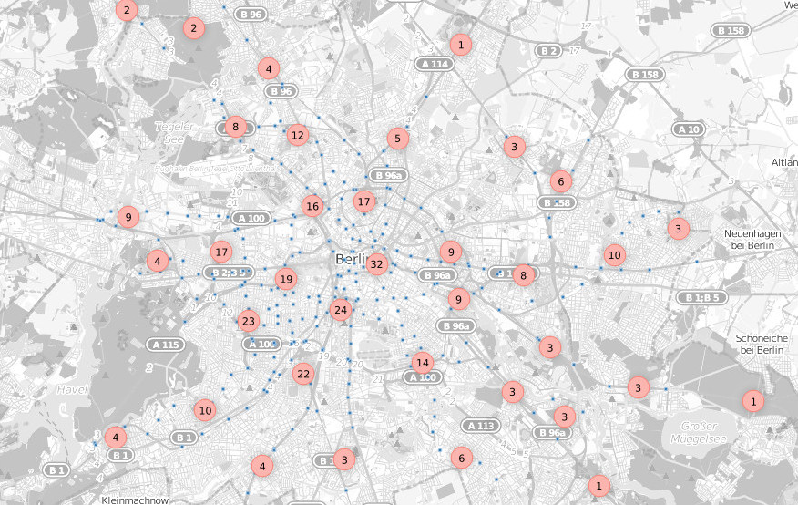
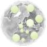

Qgis Marker Cluster
Functionality
The plugin takes point layers and creates clusters by distance.
Usage
- load a point layer dataset (an example dataset can be added with the button
 )
) - setup the first cluster 
- the algorithm saves the results as a temporal shape file, so you can add as much layers as u want
- define your preferred distance
- the standard style is a simple circle labeled with the count of points inside the cluster
Upcomming features
- define addidional columns to be available as label (e.x. mean, max or min values of the input column)
- set different styles per scale
Links
- You found a bug? You want to contribute with code or ideas? Contact us on the project page